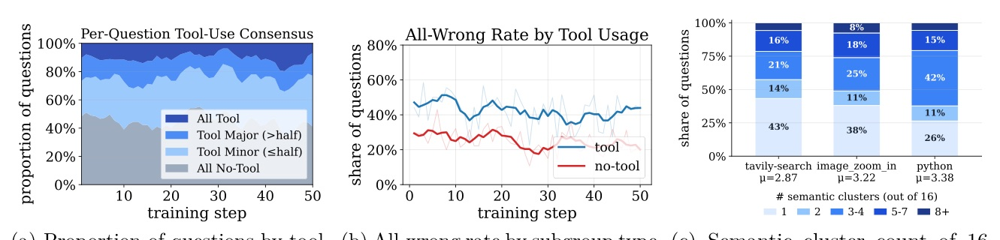
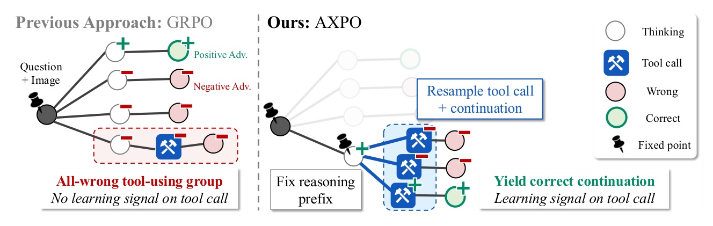
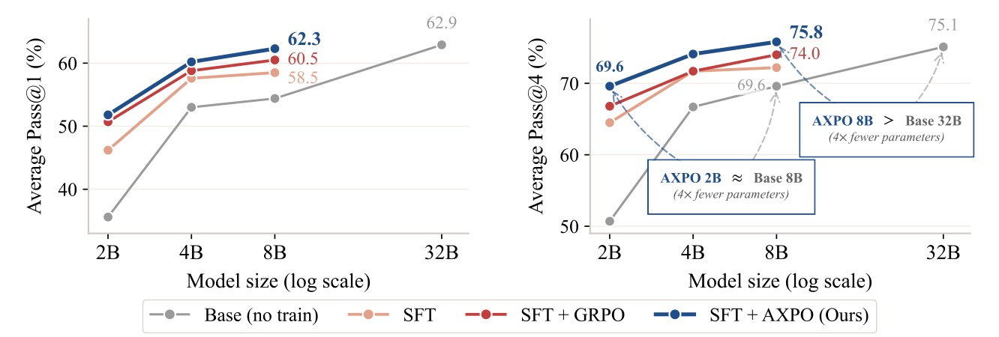
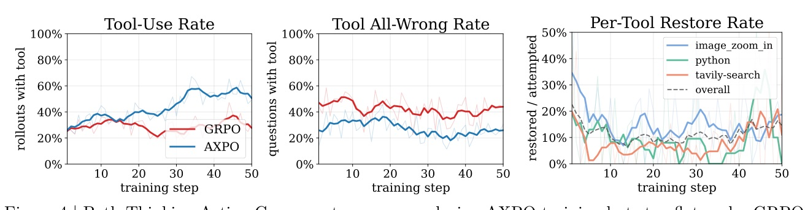
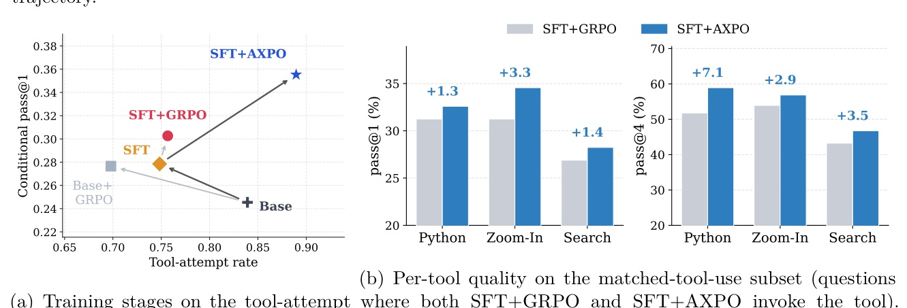

論文：Agent Explorative Policy Optimization for Multimodal Agentic Reasoning · arXiv 2605.28774 · venue 依 NVIDIA Research 官方 publication 頁 · project page byungkwanlee.github.io/AXPO-page
用 GRPO 訓練 agentic VLM 時，tool call 只出現在約 30% 的 rollout，而且一旦用了 tool，整組約 40% 的題目全錯，tool-call token 因此拿不到正向 advantage。AXPO 在這些「全錯的 tool-using 子群」上固定 thinking prefix、只重抽 tool call。結果 8B 的 Pass@4 達 75.8，超過 32B Base 的 75.1。
Thinking（預設）
Acting / Tool use（輔助）


K = 4 個續寫 / prefix；confidence vs. predictive entropy 的選擇見 App.B.9（Figure 6）。
資料
超參數

| Size | Base | GRPO | SFT | SFT+GRPO | SFT+AXPO | Δ |
|---|---|---|---|---|---|---|
| 2B | 35.6 | 45.4 | 46.2 | 50.7 | 51.8 | +1.1 |
| 4B | 53.0 | 53.6 | 57.6 | 58.8 | 60.2 | +1.4 |
| 8B | 54.4 | 59.2 | 58.5 | 60.5 | 62.3 | +1.8 |
| 32B（僅推論） | 62.9 | – | – | – | – | – |
| 8B · 4 bench 平均 | P@1 | P@4 |
|---|---|---|
| SFT + GRPO（參考） | 51.9 | 68.3 |
| w/o prefix fix（從頭 rollout） | 52.1 | 69.1 |
| 改為 no-tool rollout resampling | 51.7 | 65.9 |
| w/o uncertainty rank（random） | 51.0 | 65.8 |
| w/o prefix credit | 51.4 | 67.7 |
| w/o separated advantage group | 51.2 | 67.0 |
| AXPO (full) | 53.9 | 70.2 |
| 8B · SFT + | P@1 | P@4 |
|---|---|---|
| GRPO (baseline) | 51.9 | 68.3 |
| GRPO + tool penalty | 46.0 | 59.1 |
| GRPO + tool bonus | 50.8 | 65.6 |
| GRPO rollout 2×（compute 2×） | 52.4 | 68.2 |
| RLTF | 43.3 | 56.0 |
| CISPO | 47.8 | 62.2 |
| ARPO（post-observation branching） | 51.3 | 65.6 |
| AXPO | 53.9 | 70.2 |


| MMSearch | SFT+GRPO | SFT+AXPO |
|---|---|---|
| w/o image search · P@1 | 44.0 | 45.0 |
| w/ image search · P@1 | 46.8 | 49.6 |
| w/o image search · P@4 | 59.3 | 61.0 |
| w/ image search · P@4 | 65.3 | 66.7 |
Re-deriving the full trajectory from scratch wastes budget on prefixes that were not the bottleneck, whereas tool-call resampling concentrates exploration precisely where the Thinking-Acting Gap manifests.
從頭重推整條軌跡，預算會浪費在本來就不是瓶頸的 prefix 上；tool-call resampling 則把探索精準集中在 Thinking-Acting Gap 出現的地方。§1, p.3
The gain therefore comes from where compute is spent, not from how much.
因此，收益來自算力花在哪裡，而不是花了多少。§4.4, p.9
post-observation branching cannot recover when the tool call itself is the failure mode, which is the regime Section 2.2 identifies as binding.
當 tool call 本身就是失敗點時，在觀察之後才分岔救不回來；而 §2.2 指出這正是真正卡住的情境。App.B.7, p.32
來源：arXiv 2605.28774 · NeurIPS 2026 · NVIDIA / KAIST